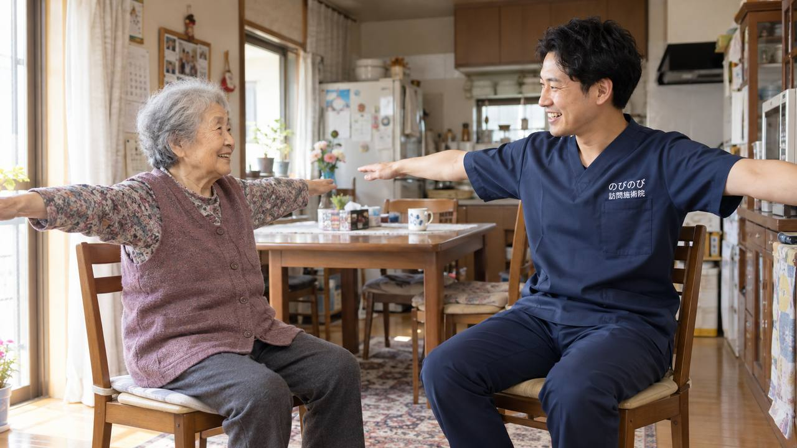

なんとなく体が重い、だるくて動く気になれない、疲れが抜けない。はっきりした病気がなくても、こうした倦怠感に悩む方が多くおられます。だるさの背景には、体のこわばりや冷え、めぐりの滞り、生活リズムの乱れなどが重なっていることがあります。倦怠感そのものが保険の対象になるわけではありませんが、それをもたらしている肩こりや腰の痛み、冷えについては、ご自宅にうかがう鍼灸・マッサージでお手伝いできる場合があります。
この記事のポイント
だるさの背景には、体のこわばりや冷え、めぐりの滞り、生活リズムの乱れなどが重なっていることがあります。倦怠感そのものが保険の対象になるわけではありませんが、それをもたらしている肩こり・腰の痛み・冷えなどについて医師が施術を必要と認め、通院がむずかしい状態であれば、はり・きゅうの医療保険でケアできる場合があります。急な強いだるさ、体重減少や発熱をともなうときは、まずかかりつけ医にご相談ください。
だるさの陰に、体の状態が隠れていることも
どこが悪いというわけではないけれど、体が重い。高齢の方によく聞かれる悩みです。だるさや倦怠感の背景には、肩や腰のこり・痛み、手足の冷え、体のめぐりの滞り、日中に動かないことによる生活リズムの乱れなどが重なっていることがあります。原因がひとつでないことも多く、まずは、だるさをもたらしている要因を一緒に整理していくことが出発点になります。
まず、医療機関に相談したほうがよいとき
急に強いだるさが出てそれが続く、体重が減ってきた、発熱がある、息切れやむくみをともなう、気分の落ち込みが強い。このようなときは、貧血や甲状腺、心臓、こころの不調など、別の病気が背景にあることもあります。まずかかりつけ医にご相談ください。訪問鍼灸マッサージは、こうした医療に代わるものではなく、体の面から、だるさの和らぎを支える立場でお手伝いします。
鍼灸ができるのは、めぐりと体の軽さ
はりやお灸では、こわばった筋肉を和らげ、めぐりをうながし、体の緊張をゆるめるケアを行います。肩や背中、腰のこりが和らぐと、体が軽く感じられたと話される方もいます。冷えが和らいで、だるさが楽になったとおっしゃる方もいます。感じ方には個人差があります。倦怠感そのものを消すわけではありませんが、体をこわばらせている要因を和らげることで、動きたい気持ちや、日々の過ごしやすさを後押しできればと思っています。
冷えとめぐりを整える
体の冷えは、だるさや疲れの感じ方に関わります。東洋医学では、体のめぐりの滞りや冷えが、重だるさにつながると考えます。お灸のじんわりとした温かさや、手足への手技は、めぐりを整え、体をあたためるケアです。冷えの強い方には、こうした温めるケアがなじみやすい傾向があります。その方の体質や、どこが冷えるかを確かめながら進めます。
生活のリズムを、無理なく整える
だるさが続くと、動かなくなり、それがさらにだるさを招く、ということが起こりがちです。朝に光を浴びる、日中に少し体を動かす、食事を座ってとる、昼寝は短めにする。こうした小さなことの積み重ねが、体のリズムを整えます。うかがうたびに、その方の生活に合わせた過ごし方の工夫を、無理のない程度に相談しながら決めていきます。動くことがむずかしい方には、寝たまま・座ったままでできる軽い動きもお伝えします。
動く気持ちを、そっと後押しする
だるさで動く気になれないときに、がんばって動きましょうと言われても、つらいものです。大切なのは、体のこわばりを和らげて動きやすくし、少しでも動いてみようかなと思える状態に近づけることです。無理をさせるのではなく、その方のペースに寄り添いながら、体の軽さと、暮らしの張りを支えていければと考えます。ご家族には、見守りのコツもお伝えします。
季節の変わり目に、だるさが強まる方へ
だるさや倦怠感は、季節の変わり目や、気温・気圧の変化で強まる方もいらっしゃいます。とくに梅雨どきや、暑さ寒さの入れかわる時期は、体がついていかず、重だるさを感じやすくなります。こうした時期は、無理をせず、体を冷やさない、生活のリズムを崩さないことが助けになります。だるさの波は自然なものなので、つらい時期は軽めに、楽な時期は少し体を動かす、と加減しながら過ごしていきましょう。その時々の体調に合わせて、ケアの内容も調整します。
食事と休息のリズムも、体を支える
だるさとつきあううえでは、食事と休息のリズムも大切です。食が細くなると力が出にくくなるため、少しずつでも栄養をとること、そして、休むときはしっかり休むことが、体を支えます。眠りが浅い、食欲がわかないといったことが続くときは、体の不調が隠れていることもあるので、かかりつけ医にご相談ください。うかがうたびに、体の様子をうかがいながら、めぐりを整え、休みやすく、動きやすい体づくりを後押しします。
料金と保険について
だるさをもたらしている肩こり・腰の痛み・冷えなど、体のつらさについて、医師が鍼やお灸を必要と認め、通院がむずかしい状態であれば、はり・きゅうの医療保険が使える場合があります。倦怠感そのものが対象になるわけではありません。1回の総額は3,950円で、自己負担は負担割合に応じた分だけです。1割の方でおよそ395円が目安です。介護保険の限度額とは別の枠で使えます。対応エリア内であれば出張費は別にかからず、集金は月ごとにまとめて行い、その月の施術の内訳がわかる明細をお渡しします。ケアプランとの兼ね合いは「医療保険と介護保険の使い分け」をご覧ください。
ご利用までの流れ
はじめに、お電話などで、だるさの様子や体のつらさ、生活のリズム、通院の状況をお聞かせください。だるさをもたらしている体の要因について、鍼灸でできることをご説明します。強い不調があるときは、受診を先におすすめすることもあります。無理のない範囲から、体を整えていきましょう。
よくある質問
だるさは鍼灸で治りますか？
だるさそのものを治すものではありません。だるさをもたらす肩こり・冷え・痛みなどを和らげ、体の軽さを支える位置づけです。強いだるさが続くときは医療機関にご相談ください。
病院では異常なしと言われました
はっきりした病気がなくても、体のこわばりや冷えが関わっていることがあります。体の面からのケアで、過ごしやすさを支えられればと考えています。
寝たきりでも受けられますか？
はい。ベッドの上で、こわばりを和らげ、めぐりをうながすケアができます。刺激も体調に合わせて調整します。
どれくらいの頻度がよいですか？
状態やご希望によりますが、週1〜2回で続ける方が多いです。無理のないペースから始めて、様子を見ながら決めていけます。
費用は1回いくらですか？
1回の総額は3,950円で、自己負担は負担割合に応じた分だけです。1割の方でおよそ395円が目安になります。対応エリア内であれば出張費は別にかかりません。
どのあたりまで来てもらえますか？
豊中・吹田・茨木・箕面・摂津・池田、尼崎・伊丹、大阪市の淀川区・東淀川区・都島区・北区・旭区にうかがっています。